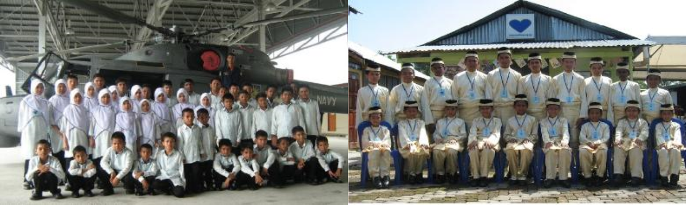

History of establishment

Rumah Nurul Iman was founded by Encik Khairul Anuar Bin Mohmad Razi. Established with the hope of helping underprivileged children such as orphans, the poor, the neglected and the oppressed, by providing shelter and the opportunity to get a perfect education. In the early stages of its establishment, Rumah Nurul Iman was managed by a committee. The committee has appointed En. Khairul Anuar Bin Mohmad Razi as the Manager/Supervisor of the hostel. He is the person in charge of all matters relating to the operation of the hostel except in matters relating to assets and finances. For some reason in 2004 the operation was moved to Jalan Intan, Kampung Dato Ahmad Said. At the end of 2005, the children were once again transported, this time due to the failure of the Nurul Iman Foundation to pay for the operating costs of the dormitory and problems with the rented hosts. As a result of facing too many problems, En. Khairul Anuar has decided to completely take over the operations of the Nurul Iman Dormitory from the Nurul Iman Foundation and its power agency.This new placement is located at Plot 359, Lorong Dato, Manjoi, Ipoh, Perak. The placement only has a two-door rental house that is rented at a rate of RM 200.00 a month. With a meager personal income, Mr. Khairul Anuar tried his best to operate the deployment with the help of local residents and ADUN Manjoi at that time, namely YB Dato' Haji Nazri.After struggling to defend the fate of these poor and orphaned children alone including cooking and everything, on October 9th 2006 En. Khairul Anuar has officially registered the Care Center for Orphans and Poor Children, Nurul Iman, which is solely owned. On October 12th, Mr. Khairul Anuar has made an oath to ratify the Nurul Iman Orphans and Poor Care Center to carry out activities for free. In order to expand the defense of orphans and poor children, In June 2010 En. Khairul Anuar has opened another Care Center (Cawangan) in Kampung Pinang, Kamunting, Taiping which places only boys but has closed operations on 1th Semtember 2016 due to not receiving support. On 30 June 2011 PERTUBUHAN KEBAJIKAN KASIH NURUL IMAN NEGERI PERAK was officially established under the Registrar of Societies. This establishment is to streamline the administration and fulfill the requirements of the Social Welfare Department.